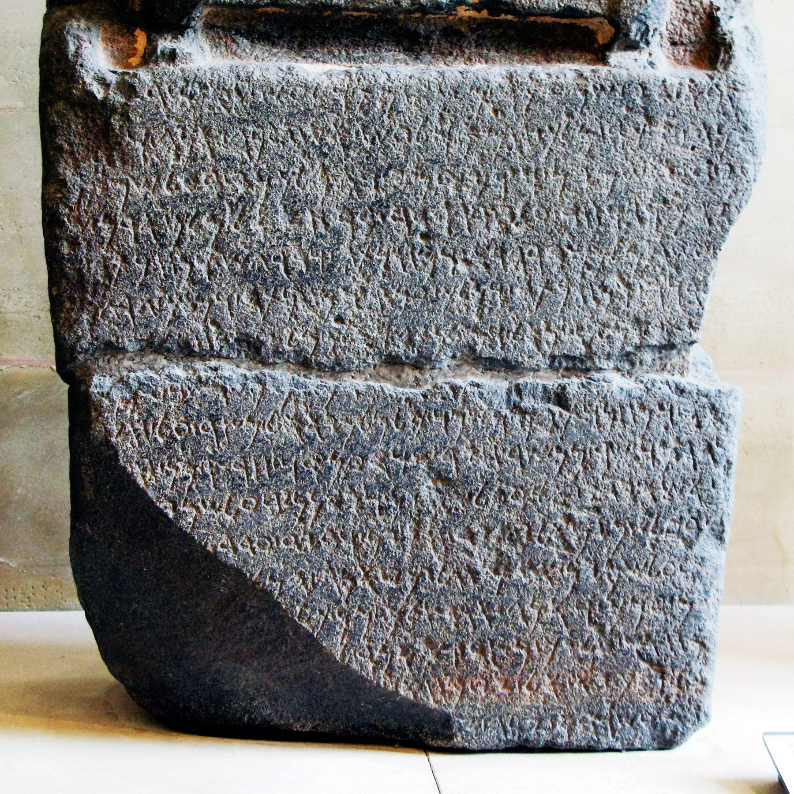

Zakkur Stele

- Find Name
- Zakkur Stele
- Description
- A basalt royal stele, of which the inscribed lower part (62 cm tall) survives with the feet of the king's statue above it, bearing an Aramaic inscription (KAI 202) dated to about 805–775 BCE. Discovered in 1903 at Tell Afis, 45 km southeast of Aleppo, in the territory of Hamath, at a site called Hazrach in the stele, which is biblical Hadrach (Zechariah 9:1). Published in 1907 and now in the Musée du Louvre, Paris (AO 8185). The text reads: 'I am Zakkur, king of Hamath and Luash... Bar-Hadad, son of Hazael, king of Aram, united against me seventeen kings... all these kings laid siege to Hazrach... Baalshamayn said to me, Do not be afraid!... I will save you.'
- Historical Period
- Iron Age II
- Evidence Class
- Contextual
- Interpretations
- Zakkur and this siege are not biblical narrative events, so the stele illuminates background rather than confirming a named biblical episode. It does name Bar-Hadad, son of Hazael, king of Aram, identified as possibly Bar-Hadad II or III, which ties it to the Aramean dynasty of 1–2 Kings. It is also the earliest Aramean evidence of the god Baalshamayn, and it names Iluwer as Zakkur's personal god, showing the polytheistic world in which Israel's neighbours lived.
- Alternative Names
- Stele of Zakkur
- Related Books
- Scripture Illuminated
- Biblical Significance
- It documents the Aramean kings of Hazael's line, whose wars with Israel fill 1–2 Kings, and it shows a small king crediting his god with deliverance from a seventeen-king coalition.
- Artifact Date
- c. 805–775 BCE
- Current Location
- Musée du Louvre, Paris (AO 8185)
- Date Discovered
- 1903
- Discovery Location
- Tell Afis, Syria
- Timeline Era
- Divided Monarchy
Awaiting Review Not yet checked against scholarly sources. Treat its claims as provisional until this entry is reviewed. About verification
Last reviewed: not yet reviewed